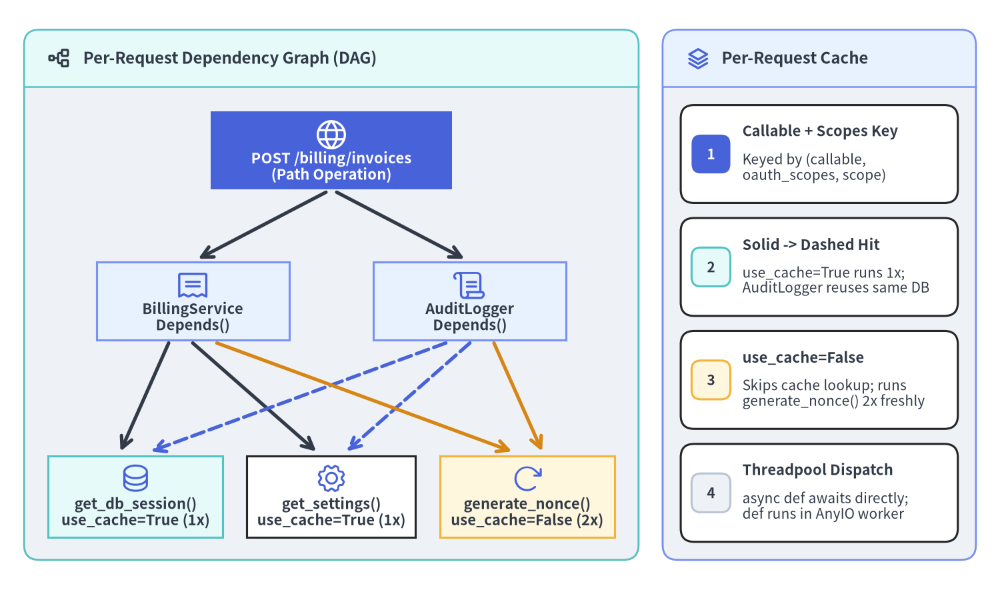
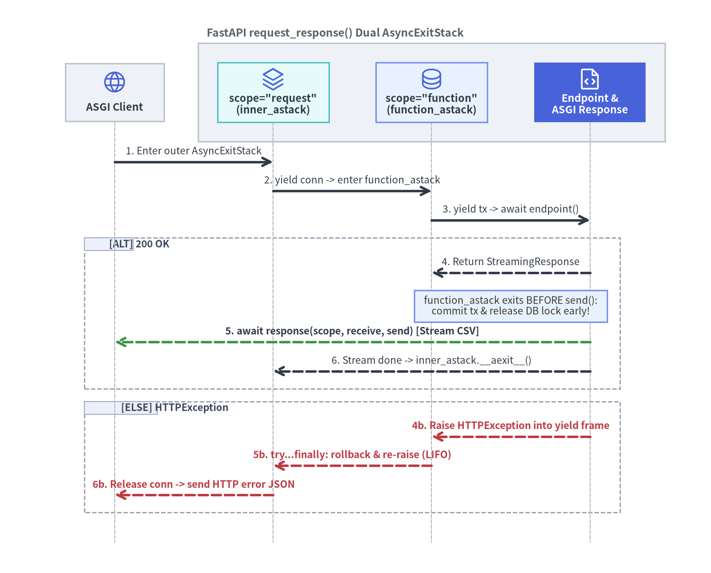

Dependant DAG, Per-Request Caching & Scopes
FastAPI v0.162.2 models every path operation and sub-dependency as a recursive Dependant Directed Acyclic Graph (DAG), memoizing shared resources per request while governing yield cleanup timing across dual AsyncExitStack scopes.

Source Code
from drawlib.canvas import save, setup
from drawlib.diagrams.architecture import ArchitectureDiagram, Node, PhosphorIcon
from drawlib.icons import phosphor
from drawlib.lines import line
from drawlib.smartarts import CardList, Panel
from drawlib.styles import Styles
setup(width=166, height=98, dpi=150)
# Left Zone: Outer Panel framing the Multi-Level Dependant DAG
dag_panel = Panel(
"solve_dependencies() Recursive Dependant DAG",
style=Styles.Neutral,
header_style=Styles.SecondaryNeutral.patch(shape_line_width=1.2),
text_style=Styles.DarkBold.patch(text_size=11.5),
icon=phosphor.tree_structure,
icon_style=Styles.DarkBold,
header_variant="filled",
header_height=9.5,
)
dag_panel.draw((4.0, 5.0), width=102.0, height=88.0, align="bottom_left")
dag = ArchitectureDiagram(
width=96.0,
height=75.0,
node_style=Styles.Primary,
node_text_style=Styles.DarkBold.patch(text_size=10.5),
edge_style=Styles.DarkBold,
edge_text_style=Styles.Dark.patch(text_size=10.0),
node_card_style=Styles.Neutral,
)
endpoint = dag.add(
Node(
"POST /billing/invoices\n(Root Dependant)",
width=40,
height=13,
icon=PhosphorIcon.GLOBE,
icon_size=5.8,
style=Styles.White,
card_style=Styles.PrimaryFlat,
text_style=Styles.WhiteBold.patch(text_size=10.5),
),
xy=(48.0, 66.5),
)
billing = dag.add(
Node(
"BillingService\nDepends()",
width=32,
height=13,
icon=PhosphorIcon.RECEIPT,
icon_size=5.8,
card_style=Styles.PrimaryNeutral,
),
xy=(25.0, 41.5),
)
audit = dag.add(
Node(
"AuditLogger\nDepends()",
width=32,
height=13,
icon=PhosphorIcon.SCROLL,
icon_size=5.8,
card_style=Styles.PrimaryNeutral,
),
xy=(71.0, 41.5),
)
db_dep = dag.add(
Node(
"get_db_session()\nuse_cache=True (1x)",
width=29,
height=13.5,
icon=PhosphorIcon.DATABASE,
icon_size=5.5,
card_style=Styles.SecondaryNeutral,
),
xy=(15.5, 9.0),
)
settings_dep = dag.add(
Node(
"get_settings()\nuse_cache=True (1x)",
width=28,
height=13.5,
icon=PhosphorIcon.GEAR,
icon_size=5.5,
card_style=Styles.White,
),
xy=(48.0, 9.0),
)
nonce_dep = dag.add(
Node(
"generate_nonce()\nuse_cache=False (2x)",
width=29,
height=13.5,
icon=PhosphorIcon.ARROW_CLOCKWISE,
icon_size=5.5,
card_style=Styles.WarningNeutral,
),
xy=(80.5, 9.0),
)
# Root fan-out (|dx|=23 < |dy|=25 -> clean bottom-to-top anchors)
dag.connect(endpoint, billing, routing="direct", padding=1.0)
dag.connect(endpoint, audit, routing="direct", padding=1.0)
dag.draw(xy=(7.0, 6.5))
# Sub-dependency edges across open canvas corridor y=[23.0, 41.0]
# 1. First-time executions from BillingService (solid dark strokes)
line((28.0, 41.0), (20.0, 23.0), arrow_head="->", style=Styles.DarkBold)
line((32.0, 41.0), (52.5, 23.0), arrow_head="->", style=Styles.DarkBold)
# 2. Per-request cache hits from AuditLogger (dashed primary strokes)
line((74.0, 41.0), (25.0, 23.0), arrow_head="->", style=Styles.PrimaryDashedBold)
line((78.0, 41.0), (57.5, 23.0), arrow_head="->", style=Styles.PrimaryDashedBold)
# 3. Uncached fresh invocations with use_cache=False (warning strokes)
line((36.0, 41.0), (85.0, 23.0), arrow_head="->", style=Styles.WarningBold)
line((82.0, 41.0), (90.0, 23.0), arrow_head="->", style=Styles.WarningBold)
# Right Zone: Per-Request Cache Mechanics Panel
cache_panel = Panel(
"dependency_cache Dict",
style=Styles.Neutral,
header_style=Styles.PrimaryNeutral.patch(shape_line_width=1.2),
text_style=Styles.DarkBold.patch(text_size=11.5),
icon=phosphor.stack,
icon_style=Styles.PrimaryBold,
header_variant="filled",
header_height=9.5,
)
cache_panel.draw((110.0, 5.0), width=52.0, height=88.0, align="bottom_left")
c_xy, c_w, c_h = cache_panel.get_content_box(
(110.0, 5.0),
width=52.0,
height=88.0,
padding=(3.0, 3.0),
align="bottom_left",
)
cards = CardList(
style=Styles.White,
text_style=Styles.DarkBold.patch(text_size=10.5),
description_style=Styles.Dark.patch(text_size=10.0),
badge_style=Styles.PrimaryFlat,
badge_text_style=Styles.WhiteBold.patch(text_size=10.0),
spacing=2.5,
)
cards.add(
"Cache Key Tuple",
"(call, tuple(scopes), scope)\nin _get_cache_key()",
badge_text="1",
)
cards.add(
"Solid -> Dashed Hit",
"use_cache=True runs 1x;\nAuditLogger reuses same DB",
badge_text="2",
badge_style=Styles.SecondaryNeutral,
badge_text_style=Styles.DarkBold.patch(text_size=10.0),
)
cards.add(
"use_cache=False",
"Skips cache lookup; runs\ngenerate_nonce() 2x freshly",
badge_text="3",
badge_style=Styles.WarningNeutral,
badge_text_style=Styles.DarkBold.patch(text_size=10.0),
)
cards.add(
"Threadpool Dispatch",
"async def awaits directly;\ndef runs in AnyIO worker",
badge_text="4",
badge_style=Styles.Neutral,
badge_text_style=Styles.DarkBold.patch(text_size=10.0),
)
cards.draw(c_xy, width=c_w, height=c_h)
save()
1. How FastAPI Compiles and Solves the Dependant DAG
At route registration time, get_dependant() inspects every endpoint signature, Annotated[..., Depends()] marker, and Security() declaration to construct an immutable tree of Dependant dataclasses (fastapi/dependencies/models.py). No reflection overhead occurs on the hot path; instead, solve_dependencies() (fastapi/dependencies/utils.py) walks the pre-built DAG depth-first on each incoming request.
Dependant / Solver Mechanism |
Internal Module Location | Runtime Responsibility |
|---|---|---|
Dependant Dataclass |
fastapi/dependencies/models.py |
Stores extracted path_params, query_params, header_params, cookie_params, body_params, child dependencies, OAuth2 scopes, use_cache, and scope. |
_get_cache_key() |
fastapi/dependencies/models.py |
Computes (dependant.call, scopes_for_cache, computed_scope) so security-aware callables only share cached results when their accumulated OAuth2 scopes match. |
solve_dependencies() |
fastapi/dependencies/utils.py |
Recursively resolves child Dependant nodes, applies app.dependency_overrides, populates dependency_cache, and aggregates validation errors before running the parent callable. |
| Execution Dispatch | fastapi/dependencies/utils.py |
Awaits async def coroutines on the event loop, dispatches sync def callables via run_in_threadpool(), and enters sync/async generators on an AsyncExitStack. |
1.1 Per-Request Memoization (use_cache=True vs use_cache=False)
In real-world layered services, diamond dependencies are ubiquitous: an endpoint injects both BillingService and AuditLogger, and both services require get_db_session and get_settings. Because Depends(..., use_cache=True) is the default, solve_dependencies() maintains a request-local dependency_cache: dict[DependencyCacheKey, Any]:
- Shared Singleton per Request (
use_cache=True): WhenBillingServiceresolves first,get_db_session()executes once and stores its session under(get_db_session, (), ""). WhenAuditLoggerrequestsget_db_sessionmoments later in the same request, FastAPI returns the exact same Python object (billing.db is billing.audit.db), guaranteeing transactional consistency across services. - Fresh Invocation (
use_cache=False): PassingDepends(generate_trace_nonce, use_cache=False)skips the cache read and invokes the callable freshly for each injection site. - Scope-Aware Cache Isolation: If a sub-dependency inspects
SecurityScopes(covered in Authentication & OAuth2 Scopes),_uses_scopes()includestuple(sorted(set(oauth_scopes)))inside the cache key so distinct scope requirements never collide.
[!IMPORTANT] Avoid placing
from __future__ import annotationsin modules where FastAPI dependencies or Pydantic models are defined inside nested scopes. FastAPI evaluatesAnnotated[T, Depends(...)]metadata at route registration time; stringified annotations that reference unresolvable local symbols cannot be inspected as dependencies and will fall back to required query parameters (422 Unprocessable Entity).
1.2 Multi-Layer Sub-Dependencies, Classes & Parameterized Callables
Any Python callable—function, class constructor (__init__), or callable object instance (__call__)—can serve as a dependency node:
- Class-as-Dependency Shorthand (
Annotated[BillingService, Depends()]): Omitting the argument toDepends()tells FastAPI to inspect the parameter's type annotation (BillingService) and invoke its__init__with recursively resolved sub-dependencies. - Parameterized Callable Instances (
RoleChecker(["admin", "finance"])): Implementingasync def __call__(self, ...)on a configured class instance lets you stamp out reusable policy guards without closures or global state. - Router & Application Guards (
dependencies=[Depends(...)]): PassingdependenciestoAPIRouter(...),@router.post(..., dependencies=[...]), orFastAPI(dependencies=[...])executes validation and authorization guards (including per-request caching!) without cluttering the endpoint's Python parameters.
import secrets
from dataclasses import dataclass
from typing import Annotated
from fastapi import APIRouter, Depends, FastAPI, Header, HTTPException, status
from fastapi.testclient import TestClient
@dataclass(frozen=True)
class AppSettings:
tenant_header: str = "X-Tenant-ID"
currency: str = "USD"
def get_settings() -> AppSettings:
return AppSettings()
session_counter = 0
async def get_db_session() -> dict[str, int | str]:
global session_counter
session_counter += 1
return {"session_id": session_counter, "driver": "asyncpg"}
def generate_trace_nonce() -> str:
return secrets.token_hex(4)
class AuditLogger:
def __init__(
self,
db: Annotated[dict[str, int | str], Depends(get_db_session)],
settings: Annotated[AppSettings, Depends(get_settings)],
nonce: Annotated[str, Depends(generate_trace_nonce, use_cache=False)],
) -> None:
self.db = db
self.settings = settings
self.nonce = nonce
class BillingService:
def __init__(
self,
db: Annotated[dict[str, int | str], Depends(get_db_session)],
settings: Annotated[AppSettings, Depends(get_settings)],
audit: Annotated[AuditLogger, Depends()],
nonce: Annotated[str, Depends(generate_trace_nonce, use_cache=False)],
) -> None:
self.db = db
self.settings = settings
self.audit = audit
self.nonce = nonce
class RoleChecker:
def __init__(self, allowed_roles: list[str]) -> None:
self.allowed_roles = set(allowed_roles)
async def __call__(self, x_role: Annotated[str, Header()] = "viewer") -> str:
if x_role not in self.allowed_roles:
raise HTTPException(
status_code=status.HTTP_403_FORBIDDEN,
detail="Insufficient role privileges",
)
return x_role
async def verify_tenant_header(
settings: Annotated[AppSettings, Depends(get_settings)],
x_tenant_id: Annotated[str | None, Header()] = None,
) -> str:
if not x_tenant_id:
raise HTTPException(
status_code=status.HTTP_400_BAD_REQUEST,
detail=f"Missing {settings.tenant_header}",
)
return x_tenant_id
require_billing_admin = RoleChecker(["admin", "finance"])
billing_router = APIRouter(
prefix="/billing",
dependencies=[
Depends(verify_tenant_header),
Depends(require_billing_admin),
],
)
@billing_router.post("/invoices")
async def create_invoice(
billing: Annotated[BillingService, Depends()],
) -> dict[str, object]:
return {
"db_session_id": billing.db["session_id"],
"shared_same_db": billing.db is billing.audit.db,
"distinct_nonces": billing.nonce != billing.audit.nonce,
"currency": billing.settings.currency,
}
app = FastAPI()
app.include_router(billing_router)
Notice that get_settings() is declared in three places (verify_tenant_header, AuditLogger, and BillingService), yet dependency_cache ensures it executes only once per request, and billing.db is billing.audit.db evaluates to True. During integration testing, swapping app.dependency_overrides[get_db_session] = override_db replaces the leaf node across the entire DAG simultaneously (see Enterprise DI, Lifespan & Testing and Testing Patterns & Production ASGI).
2. Resource Lifecycles with yield & Dual AsyncExitStacks
Generator dependencies (yield inside async def or sync def) split execution into a setup phase (before yield) and a teardown phase (after yield). In FastAPI v0.162.2, request_response() in fastapi/routing.py wraps every HTTP request inside two nested AsyncExitStack context managers stored in the ASGI scope:
scope["fastapi_function_astack"](scope="function"): Exits immediately after the path operation function returns itsResponseobject—beforeawait response(scope, receive, send)transmits bytes over the network or runs streaming generators.scope["fastapi_inner_astack"](scope="request", default): Wraps both the path operation andawait response(scope, receive, send), exiting only after the entire HTTP response, streaming chunks, and background tasks have finished.

Source Code
from drawlib.canvas import save, setup
from drawlib.diagrams.sequence import Participant, ParticipantGroup, PhosphorIcon, SequenceDiagram
from drawlib.styles import Style, Styles
setup(width=166, height=134, dpi=150)
seq = SequenceDiagram(
node_style=Styles.Primary,
node_text_style=Styles.DarkBold.patch(text_size=10.5),
edge_style=Styles.DarkBold,
edge_text_style=Styles.Dark.patch(text_size=10.0),
node_card_style=Styles.Neutral,
col_width=37.0,
step_y=6.8,
margin=5.0,
)
client = seq.add(
Participant(
"ASGI Client",
width=23,
height=13.5,
icon=PhosphorIcon.GLOBE,
icon_size=5.8,
)
)
runtime = seq.add(
ParticipantGroup(
title="FastAPI request_response() Dual AsyncExitStack",
padding=4.5,
style=Styles.Neutral,
text_style=Style(text_size=11.0),
)
)
req_stack = runtime.add(
Participant(
'scope="request"\n(inner_astack)',
width=26,
height=14,
icon=PhosphorIcon.STACK,
icon_size=5.8,
card_style=Styles.SecondaryNeutral,
)
)
fn_stack = runtime.add(
Participant(
'scope="function"\n(function_astack)',
width=26,
height=14,
icon=PhosphorIcon.DATABASE,
icon_size=5.8,
card_style=Styles.PrimaryNeutral,
)
)
endpoint = runtime.add(
Participant(
"Endpoint &\nASGI Response",
width=26,
height=14,
icon=PhosphorIcon.FILE_CODE,
icon_size=5.8,
style=Styles.White,
card_style=Styles.PrimaryFlat,
text_style=Styles.WhiteBold.patch(text_size=10.5),
)
)
client.request(req_stack, "1. Enter outer AsyncExitStack")
req_stack.request(fn_stack, "2. yield conn -> enter function_astack")
fn_stack.request(endpoint, "3. yield tx -> await endpoint()")
with seq.alt("200 OK") as alt_blk:
alt_blk.style = Styles.MutedDashed.patch(shape_line_width=1.2)
alt_blk.text_style = Style(text_size=10.0, halign="left")
endpoint.reply(fn_stack, "4. Return StreamingResponse")
seq.note(
"function_astack exits BEFORE send():\ncommit tx & release DB lock early!",
over=[fn_stack, endpoint],
style=Styles.PrimaryNeutral.patch(text_size=10.0),
)
endpoint.reply(
client,
"5. await response(scope, receive, send) [Stream CSV]",
style=Styles.SuccessBold,
text_style=Styles.DarkBold.patch(text_size=10.0),
)
endpoint.reply(req_stack, "6. Stream done -> inner_astack.__aexit__()")
with seq.else_("HTTPException") as else_blk:
else_blk.style = Styles.MutedDashed.patch(shape_line_width=1.2)
else_blk.text_style = Style(text_size=10.0, halign="left")
endpoint.reply(
fn_stack,
"4b. Raise HTTPException into yield frame",
style=Styles.DangerBold,
text_style=Styles.DangerBold.patch(text_size=10.0),
)
fn_stack.reply(
req_stack,
"5b. try...finally: rollback & re-raise (LIFO)",
style=Styles.DangerBold,
text_style=Styles.DangerBold.patch(text_size=10.0),
)
req_stack.reply(
client,
"6b. Release conn -> send HTTP error JSON",
style=Styles.DangerBold,
text_style=Styles.DangerBold.patch(text_size=10.0),
)
seq.draw(xy=(83.0, 67.0), align="center")
save()
2.1 Choosing Between scope="function" and scope="request"
When scope is omitted (scope=None), _get_computed_scope() defaults generator dependencies to "request" so resources remain alive if consumed by a streaming body generator. Explicitly selecting scope="function" vs scope="request" prevents subtle connection-pool exhaustion under slow clients:
| Attribute | Depends(dep, scope="function") |
Depends(dep, scope="request") (Default for yield) |
|---|---|---|
| Underlying Stack | request.scope["fastapi_function_astack"] |
request.scope["fastapi_inner_astack"] |
| Teardown Timing | Before await response(scope, receive, send) |
After response transmission, streaming & background tasks |
| Primary Use Cases | Write transactions, row locks, RPC spans around handler logic | Cursors read inside StreamingResponse / SSE, request-wide audit contexts |
| Composition Rule | Can depend on both "request" and "function" dependencies |
Must not depend on shorter-lived "function" dependencies |
2.2 Mandatory try...finally Cleanup & Exception Propagation
Whenever an endpoint or a sibling sub-dependency raises an exception (such as HTTPException or a domain error) after your yield dependency has entered, Python's AsyncExitStack injects that exception back into the suspended yield statement via athrow() / throw(). Two rules are non-negotiable in production code:
- Always wrap
yieldintry ... finally:: Code written bare afteryieldwithoutfinally:will never execute if an unhandled exception aborts the request, leaking database sessions or semaphores. - Never swallow exceptions after
yield: If you catch exceptions to trigger a transaction rollback (except Exception: await tx.rollback(); raise), you must re-raise the exception. If ascope="request"dependency swallows an exception without re-raising beforeresponsewas sent, FastAPIv0.162.2halts withFastAPIError: Response not awaited.
from collections.abc import AsyncIterator
from typing import Annotated
from fastapi import Depends, FastAPI, HTTPException, status
from fastapi.responses import StreamingResponse
from fastapi.testclient import TestClient
events: list[str] = []
app = FastAPI()
async def get_request_connection() -> AsyncIterator[str]:
events.append("req_conn:enter")
try:
yield "conn_pool_1"
finally:
events.append("req_conn:exit")
async def get_db_transaction(
conn: Annotated[str, Depends(get_request_connection, scope="request")],
) -> AsyncIterator[str]:
events.append(f"fn_tx:enter({conn})")
try:
yield "tx_active"
events.append("fn_tx:commit")
except Exception:
events.append("fn_tx:rollback")
raise
finally:
events.append("fn_tx:exit")
@app.get("/reports/export")
async def export_report(
tx: Annotated[str, Depends(get_db_transaction, scope="function")],
fail: bool = False,
) -> StreamingResponse:
events.append(f"endpoint:body({tx})")
if fail:
raise HTTPException(
status_code=status.HTTP_409_CONFLICT,
detail="Report snapshot locked",
)
async def stream_rows() -> AsyncIterator[bytes]:
events.append("stream:chunk_1")
yield b"id,amount\n1,250\n"
return StreamingResponse(stream_rows(), media_type="text/csv")
Running GET /reports/export records the exact deterministic sequence ["req_conn:enter", "fn_tx:enter(conn_pool_1)", "endpoint:body(tx_active)", "fn_tx:commit", "fn_tx:exit", "stream:chunk_1", "req_conn:exit"]: the "function"-scoped transaction commits and exits before stream_rows() emits bytes, while the "request"-scoped connection remains open until streaming completes. When ?fail=true raises 409 Conflict, re-raising inside except plus finally: guarantees ["req_conn:enter", "fn_tx:enter(conn_pool_1)", "endpoint:body(tx_active)", "fn_tx:rollback", "fn_tx:exit", "req_conn:exit"].
Next, see Authentication & OAuth2 Scopes for how fastapi.security layers credential extraction, OAuth2 SecurityScopes, and OpenAPI 3.1 securitySchemes directly atop this Dependant DAG, and Native SSE, JSONL & WebSockets for streaming lifecycles.